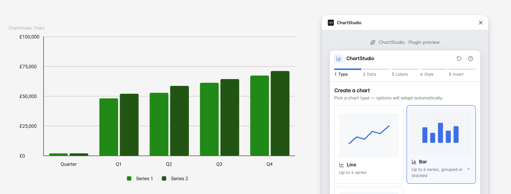

Concept prototype
ChartStudio
A Figma plugin concept for creating consistent, accessible charts from design-system presets.
ChartStudio explores how designers can create polished bar, line and doughnut charts directly in Figma, using predefined responsive sizes, accessible styling and reusable chart settings.

- Role
- Product design, UI design, prototyping
- Tools
- Figma, AI-assisted development, GitHub, Codex
- Focus
- Data visualisation, accessibility, design systems
- Status
- Work in progress / concept prototype
The problem
Designers often need to create charts for product interfaces, dashboards and reports, but chart design can become inconsistent when every chart is drawn manually. ChartStudio was designed to explore how chart creation could become faster, more consistent and easier to align with design-system rules.
Design approach
- Fixed responsive chart sizes to support predictable layouts across products, dashboards and reports.
- Chart type selection for bar, line and doughnut charts inside a single guided workflow.
- Accessible colours, labels and legends that support clarity and inclusive visual communication.
- Layout rules for spacing and alignment so charts feel cohesive with surrounding interface components.
- Reducing repetitive manual work inside Figma by turning recurring chart setup into reusable presets.
Key features
- Preset chart sizes
- Bar, line and doughnut chart options
- Legend and label controls
- Accessible visual styling
- Design-system-ready output
Screenshots
ChartStudio is a Figma plugin concept designed to help designers create consistent, accessible charts using preset sizes, chart controls and reusable styling options. The gallery below follows the plugin flow from setup through to final chart insertion, showing how those design-system choices remain clear and reusable at every step.
The screenshots below show the ChartStudio plugin flow, from selecting a chart type and entering data through to styling, reviewing and inserting a finished chart into Figma.


What I learned
This project helped me explore how product design, accessibility and AI-assisted development can work together. It also highlighted the importance of clear layout rules, predictable component behaviour and designer-friendly controls when creating tools for other designers.